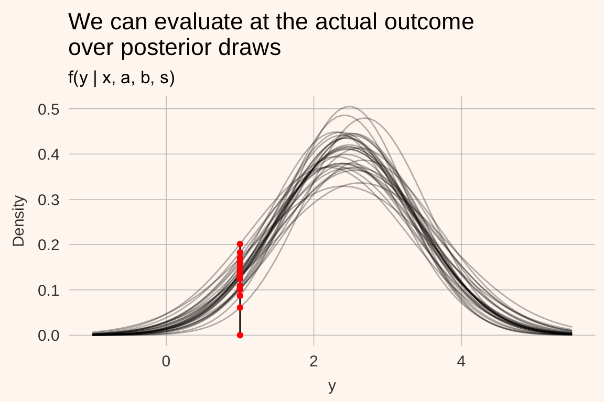
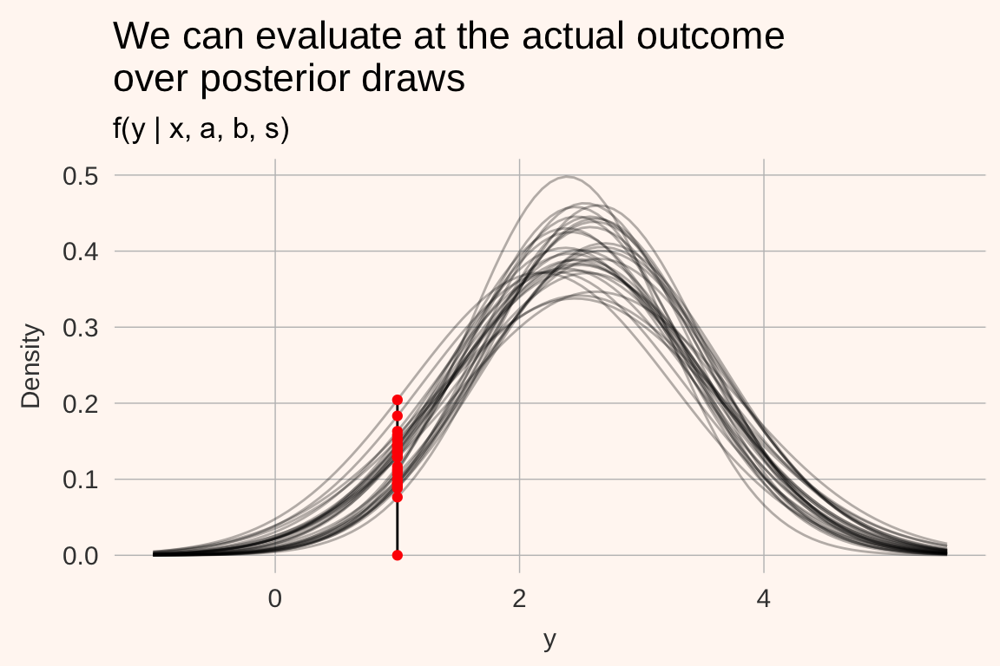
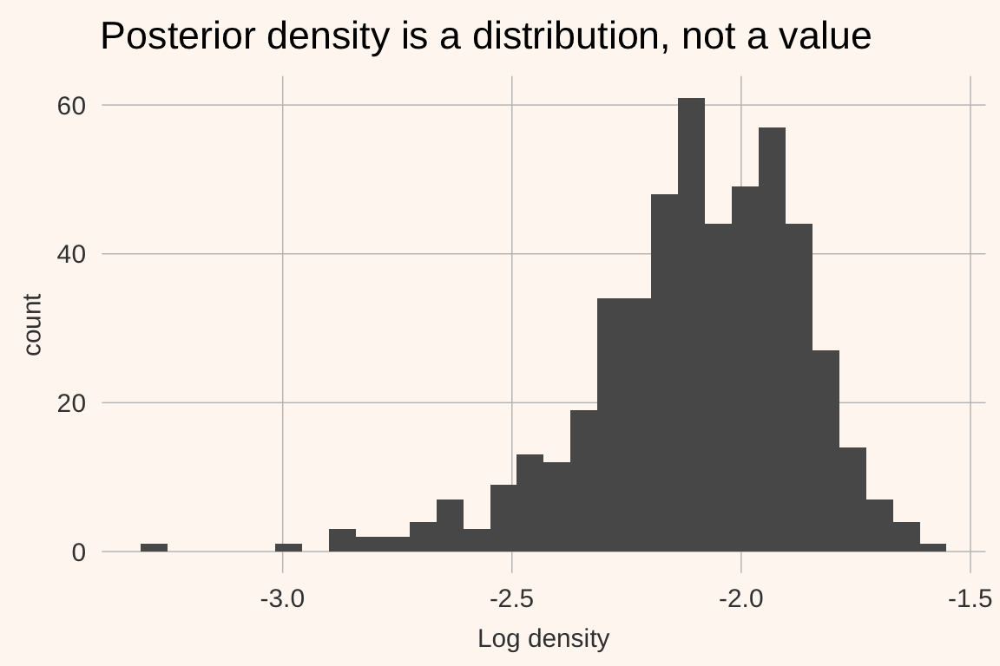

Session 1 An introduction to Stan
1.1 Why might you want to start learning Bayesian methods?
Learning Bayesian modeling does require a time investment. If you build and estimate statistical models for a living, it is probably an investment worth making, but we should be very explicit about the benefits (and costs) up-front. The benefits are many. Using Bayesian methods, we can take advantage of information that does not necessarily exist in our data (or model structure) in estimating our model. We can combine sources of information in a simple, coherent fashion. Uncertainty in our predictions automatically incorporates uncertainty in parameter estimates. We can define models that are arbitrarily rich—potentially with more parameters than we have data-points— and still expect coherent parameter estimates. We don’t use tests; instead we just check the implied probabilities of outcomes of interest in our estimated model, whose parameters we can give probabilistic interpretations. And perhaps most importantly, using Bayesian methods forces us to understand our models far more deeply than with canned routines.
These benefits don’t come free. The approach we advocate in this book—estimating models using full Markov Chain Monte Carlo—can appear slow. Learning Bayesian techniques, and a new programming language, is costly. And some fields have strong frequentist cultures, making communication of Bayesian results an important part of your work. We feel these costs are small relative to the potential gains.
Let’s illustrate these benefits with examples. These examples are from real-world applied work by ourselves and our colleagues; hopefully you will see analogies with your own work.
Benefit 1: Incorporating knowledge from outside the data
When we run a field experiment, we typically want to evaluate the impact of some experimental treatment on an outcome. This impact is known as a treatment effect. Experiments can be costly do perform, limiting the number of observations that we can collect. Consequently, in these small-data studies it is common to have very imprecise estimates of the treatment effect.
Bayesian analysis of the experiment can help when there is more information available about the the treatment effect than exists the observations from our experiment, as would be the case of there having been previous studies of the same treatment effect. These previous studies’ results can be incorporated into our study using what is known as a hierarchical prior, resulting in more precise estimates of the treatment effect.
For example, imagine you are an education researcher evaluating the impact of a trendy new educational teaching method on test scores. You run a randomized experiment on seventy students at one school and learn that the intervention improved test scores by 34 points on a scale from to 800. Because of the fairly small sample size, this estimate has a standard error of 23.5, and is not “statistically significant” with a p-value of 0.15 (greater than the arbitrary 0.05 threshold used for declaring statistical significance in many fields). This is consistent with a 95% confidence interval of the estimate of (-12.8 to 80.9). If you were to roll out the intervention on a large cohort of students, what would you expect the treatment effect to be? 0—our estimate is not statistically significant? 34? Some other number?
Now suppose that because this educational intervention is trendy, it is being experimented on by other researchers. You find that these researchers have achieved the following estimates of the treatment effect from the same treatment (this is Rubin’s famous 8 Schools data (Rubin 1981)):
| School | Treatment effect | Standard error |
|---|---|---|
| A | 28.39 | 14.9 |
| B | 7.94 | 10.2 |
| C | -2.75 | 16.3 |
| D | 6.82 | 11.0 |
| E | -0.64 | 9.4 |
| F | 0.63 | 11.4 |
| G | 18.01 | 10.4 |
| H | 12.16 | 17.6 |
After seeing these other study results of the same intervention, how might your expectations of a roll-out of the intervention change? It turns out that we can use these study results in re-analyzing our own data in order to get a more precise estimate of the treatment effect in our own study. Doing so reduces the 95% “credibility interval”.
Benefit 2: Combining sources of information
A similar type of analysis to the is to use Bayesian methods to combine sources of information, as in a meta-analysis or political poll aggregation. The aim of this type of research is to estimate a statistic—for instance, the distribution of political preferences, or a treatment effect—you would expect to find in as-yet untested populations using previous studies as the data source, not the underlying data. The central notion is that these previous studies are noisy estimates of some underlying statistic that applies to the whole population. They are noisy partly because of sampling variability, but also because the studies might differ systematically from one another (political pollsters using different questions, for example). An important assumption is that together, these studies are not systematically biased once we account for observable differences between them.
A recent example of this type of analysis is in (Meager 2016), who uses hierarchical Bayesian modeling to obtain estimates of the generalizable treatment effects (and quantile effects) of microcredit expansions on various household measures of financial success.
The study makes several contributions, but two highlight the power of a (hierarchical) Bayesian approach. The first is that a biproduct of the Bayesian aggregation procedure is an estimate of the generalizability of a given previous study. That is, the procedure tells us how much we can expect to learn about the impact of a yet-untried microcredit expansion from a given experiment. The second is that using a hierarchical Bayesian aggregation procedure gives us new estimates for the treatment effects in the previous studies. Remember: the estimates from those previous studies are noisy. The technique reduces the noise in these estimates by “borrowing power” from other studies. In the report, several of the “statistically significant” findings in the previous studies lose their “significance” once we adjust them for the fact that similar studies find much smaller (or zero) effects. In a world in which costly policy decisions might be influenced by false discoveries, this feature is appealing.
Benefit 3: Dealing with uncertainty consistently in model predictions
We often use models to generate predictions or forecasts. There are several types of uncertainty that we ought to be concerned with. The first is sampling variability: even if we have the “perfect model” (we don’t believe such a thing exists) there will remain variation in what we are predicting, either because of pure randomness or measurement error. If we were to use the model for predictions, we should expect the model to be right on average, but not right in every instance.
The second source of uncertainty is uncertainty in the unknown parameters in our model. A model itself typically combines “knowns” and unknown variables, and the goal of estimating a model is to draw inference about the value of the unknowns. So long as we only have a limited number of observations, we will be unsure of the precise values of the unknowns; this contributes to uncertainty in our predictions.
The third source of uncertainty is uncertainty about whether the model is the right model for the job— is it correctly specified, and are we modeling a stationary (or non-changing) set of relationships? If the model is improperly specified or if the fundamental relationships of the system are changing, our model will not perform well. Importantly, this type of uncertainty is not represented by predictive intervals—it is therefore prudent to treat predictive intervals as the minimum amount of uncertainty that we should have over the outcome.
By using Bayesian methods, we automatically deal with the first and second sources of uncertainty, without resorting to workarounds. Non-Bayesians can do this as well (for example, by boostrapping), but it is not an inherent part of the procedure. But neither Bayesian nor non-Bayesian techniques deal well with the problem of poorly-specificed models and “model non-stationarity”. So what do we do? Using a well thought-through workflow and “generative reasoning” (see 2) can help us iterate towards a specification that describes our data on hand well. Unfortunately, model non-stationarity is a difficult, philosophical problem. There are no quick fixes.
Benefit 4: Regularizing richly parameterized models
Many important predictive/control variables have high dimensionsionality. For example, imagine you are building a model to predict whether the a package deliverd from town A to B will be delivered late. An important predictive variable will be the origin and destination towns. In most countries, there are a very large number of post-codes, whose values have no intrinsic meaning (so we cannot use these as a numerical control variable). How can we use these values to generate better predictions? And how should we learn from towns with very few observations vis-à-vis towns with many?
How do we deal with this problem without using Bayesian methods? One popular technique is to “one-hot” encode the categorical predictors, so that our data go from
| zip_code | other_data |
|---|---|
| 11111 | … |
| 11112 | … |
| 11113 | … |
| 11114 | … |
| … | … |
to
| zip_code 11111 | zip_code 11112 | zip_code 11113 | zip_code 11114 |
|---|---|---|---|
| 1 | 0 | 0 | 0 |
| 0 | 1 | 0 | 0 |
| 0 | 0 | 1 | 0 |
| 0 | 0 | 0 | 1 |
| … | … | … | … |
And then continue apace. The problem with such an approach is that our parameter space becomes extremely large, and we might end up doing “noise-mining”—discovering relationships where there are none, simply through bad luck. A trick known as “regularization” can help prevent this, and is considered good practice when you have a model with many variables. It does so by “penalizing” parameter estimates that are not estimated precisely—for instance, those zip codes with very few observations—“shrinking” the parameter estimates towards zero (or some other value). Regularization like this is widely used in machine learning. A difficulty is that most canned routines that implement regularization do not allow for easy incorporation of uncertainty in the parameter estimates.
Bayesian methods also employ regularization, through the use of priors. This is because our parameter estimates will always be between the likelihood estimate (typically, the estimates you’ll get from a non-Bayesian approach) and our priors. Strictly, priors should encode the information that we have about parameter estimates before we estimate a model. One valuable type of prior information that we have is “regularization works!” or “mean reversion happens!” These partly motivate the approaches we advocate for modeling hierarchical and panel data, especially the use of hierarchical priors.
Benefit 5: Doing away with tests
In frequentist statistics, inference is performed through the use of tests. Testing is normally the process of combining model and data to come up with a test statistic, which will have some large-sample limiting distribution under the assumption that the null hypothesis is correct. We then compare the test statistic to that limiting distribution to determine whether there exists sufficient evidence to reject the null hypothesis.
Done well, testing can yield useful insights and help guide modeling. But as an approach to workflow and science, testing is difficult to learn and remember, easy to abuse, and with limited data, can result in many erroneous conclusions.
In Bayesian analysis, we do not use tests. All inference is conducted by analysing our fitted model (the posterior), which is typically a matrix of draws from the joint distribution of all parameters and predictions. The posterior has a probabilistic interpretation, and consequently if we want to make a probabilistic statement about our fitted model, we only need to count the number of draws from the posterior for which a condition holds, and divide it by the number of draws.
This is a far more intuitive and easy-to-use way of conducting inference.
1.2 Models and inference
The type of modeling we are doing here is known as generative modeling, typically with fairly strong assumptions about the parametric sampling distributions that give rise to our data. For instance, we might have a normal linear regression model
\[ y_{i} = X_{i}\beta + \epsilon\mbox{ where } \epsilon \sim \mbox{Normal}(0,\, \sigma) \]
Which for many scale-location type distributions, can be written as
\[ y_{i} \sim \mbox{Normal}(X_{i}\beta ,\, \sigma) \]
Which simply says that \(y_{i}\) is generated according to a normal distribution with a location \(X_{i}\beta\), and with residuals of average size \(\sigma\). In the case of the normal distribution, the location is the mean or expected value, and the scale of the residuals is the residual standard deviation. This is the generative model—the model which we say gives rise to_generates_ the data \(y\). (Nb. in this case we refer to \(X\) as being conditioning information, ie data that is not generated within the model; if we do not know its value out of sample we should be modeling it too!) In this course we’ll restrict ourselves to generative models where the generative distribution has a known parametric form.
Don’t be put off by the choice of a normal distribution. If we thought that large deviations from the expected value were not unexpected, we might use a fat-tailed distribution, like
\[ y_{i} \sim \mbox{Student's t}(\nu, X_{i}\beta ,\, \sigma) \] or
\[ y_{i} \sim \mbox{Cauchy}(X_{i}\beta ,\, \sigma) \]
In any case, the above are models. The models themselves have fixed unknown parameters and, possibly, fixed latent variables, about which we want to conduct probabilistic inference. That is, we want to be able to make probabilistic statements about the true (out of sample) values of the the fixed values of unknown parameters and latent variables.
It is common to use different techniques to do this, with the technique depending on the model. For example,
| Model | Estimation technique | Inference method |
|---|---|---|
| Normal linear model | OLS Maximum likelihood IV/GMM | Appeal to sampling theory/pray |
| Generalized linear model | Maximum likelihood/GMM | Bootstrap |
| Hierarchical linear model | Expectation maximization (EM)/MCMC | Approximation to Bayesian/ Genuine Bayes |
| Mixed logit | Simulated likelihood | Bootstrap |
| Aggregate mixed logit | BLP/GMM | Bootstrap while reading War and Peace |
| State-space models | Kalman filter/particle filters/sequential Bayes | Built into method |
| Neural network | Gradient descent with backpropagation/Variational Bayes | Only care about predictions |
| Gaussian process | Maximum likelihood/variational Bayes/MCMC |
This distinction between models and estimation procedures probably feels quite comfortable for economists. In other fields, particularly nonparametric machine learning, there is no generative model, and the estimation procedure and “model” are one and the same.
The point of Stan is to allow us to express a wide range of probability models, such as those above. Once we have expressed the generative model and collected our data, we can use a variety of techniques to estimate the parameters of these models. In principle we can fit models that do not make use of prior information, which corresponds to the maximum likelihood estimate. But normally we’ll find it more useful to use prior information, in which case we’ll be estimating models using Bayesian techniques.
Stan implements three cutting-edge estimation methods:
NUTS, a variety of Hamiltonian Monte Carlo. This is the default method, and provides amazingly robust estimation of arbitrarily complex models. The only downside is that it can take a little while to run, especially on larger datasets. There are ongoing efforts to speed it up. We’ll provide a very high-level conceptual background below.
Variational Bayes. This method approximates the (unconstrained) posterior by minimizing the KL divergence between the true posterior and a Gaussian proposal. Because it’s just an optimization problem, it works more quickly than NUTS. But the quality of the estimates aren’t as robust. Yet for some models, in particular, neural networks, this is less of a concern.
Optimization. Stan has three optimizers, a simple Newton method, BFGS, and L-BFGS (which uses less memory and so scales to bigger parameter spaces). These can be used to find the maximum likelihood or penalized likelihood estimates to our models.
1.3 Why use Stan?
Once you’ve accepted that you want to have the option of using Bayesian methods to fit your models, you’re left with a choice of how to do it. Roughly, you have a few options:
- Hand-code a sampler in your scientific language of choice (Julia or C++ good options). Hard! But good for niche uses, a la FRBNY’s DSGE model.
- Use old-school Gibbs sampling software like BUGS or JAGS. Easy, but limited in the models you can express/size of the parameter space.
- New-school software, including Stan and PyMC3. These are very similar pieces of software, with the main difference being that Stan ports across languages (R, Python, Matlab, Julia, Mathematica, Stata and the command line), whereas PyMC3 is a package for Python. If you’re a die-hard Python developer, you might prefer using PyMC3.
Stan is definitely one of the better contenders among these. It is not the right tool for all jobs, but it is the best tool for many. The jobs where Stan dominates tend to look like:
- Continuous parameter space. Stan doesn’t estimate discrete parameters (though many discrete parameters can be marginalized out)
- High dimensioned parameter space, as in latent data or hierarchical models—especially when ratio of the number of parameters to number of observations is high
- Peculiar likelihoods
- Useful prior information
- Not standard models (Run-of-the-mill models often have well-implemented canned routines elsewhere).
- Because it’s fun and helps you think better.
1.4 Background: Bayes rule, likelihood and priors
Bayesian inference is hard in the sense that thinking is hard. - Don Berry
Fitting a model using Bayesian techniques involves two steps. The first is working out a likelihood for our data given a set of unknowns, normally within a parametric framework. Recall, we use the term “data” to refer to any variables whose values we do not know out of sample. The second step is to impose prior distributions over the unknowns in the model. If a model is well-posed, the likelihood can be evaluated, and the priors are proper (integrate to 1), then Stan should be able to fit the model. Let’s discuss a bit what these terms mean.
1.4.1 Likelihood/log likelihood
Let’s say we have a very simple linear model of \(y\) with a single covariate \(x\). \(\alpha\), \(\beta\) and \(\sigma\) are the model’s parameters.
\[ y_{i} = \alpha + \beta x_{i} + \epsilon_{i} \]
with \(\epsilon_{i} \sim \mbox{N}(0, \sigma)\). This is the same as saying that
\[ y_{i} \sim \mbox{N}(\alpha + \beta x_{i}, \sigma) \]
This is the model we are saying generates the data. It has three unknowns, \(\alpha\), \(\beta\) and \(\sigma\). What we’d ideally want is some way of scoring various combinations of these unknowns so that the score is high when the model describes the data well, and low when it does not. One such way of creating a score is to evaluate the likelihood of the data given the parameters.
Let’s say we propose a set of parameters, \(\alpha = 2\), \(\beta = .5\) and \(\sigma = 1\) and we have an obervation \(y_{i} = 1,\, x_{i} = 1\). Given the parameters and \(x_{i}\) we know that the outcomes \(y\) should be distributed as
\[ y_{i} \sim \mbox{N}(\alpha + \beta x_{i}, \sigma) \]
which might look like this:

Now we ask: what was the density at the actual outcome \(y_{i}\)?

The value of the density at an observed outcome is the likelihood contribution \(f(y_{i} | x_{i}, a, b, s)\) of a single datapoint. If we assume (conditional) independence of the draws, the sample likelihood of all data is the product of all the individual out of sample likelihoods \(\prod_{i = 1}^{N}f(y_{i} | x_{i}, a, b, s)\).
You can probably see the problem here—for reasonably large spreads of the data, the value of the predictive density for a datapoint is typically less than 1, and the product of many such datapoints will be an extremely small number. This might give us numerical issues. One way around this is to take the log of the likelihood—the Log Likelihood. Because the log of numbers in (0, 1) are negative numbers large in absolute value, the sum of these numbers will also have a large absolute value, so we’ll not get numerical issues in computation.
\[ \log\left( \prod_{i = 1}^{N}f(y_{i} | x_{i}, a, b, s)\right) = \sum_{i = 1}^{N}\log(f(y_{i} | x_{i}, a, b, s)) \]
1.4.2 So what does the likelhood mean?
Log likelihood is a confusing concept to beginners as the values of the numbers aren’t easily interpretable. You might run the analysis and get a number of -3477 and ask “is that good? Bad? What does it mean?” These numbers are more meaningful when conducting model comparison, that is, we get the out of sample log likelihood for two different models. Then we can compare them. The usefulness of this approach is best illustrated with an example.
Imagine that we have an outlier—rather than \(y_{j} = 1\) as in the image above, it is -10. Under the proposed model, we’re essentially saying that the such an outcome is all but impossible. The probability of observing an observation that low or lower is 3.732564310^{-36}. The density of such a point would be 4.695195410^{-35}—a very small number. But its log is large in absolute value: -79.0439385. Compare that with the log likelihood of the original \(y_{j} = 1\): -2.0439385. An outlier penalizes the log likelhood far more than a point at the mode.
This idea helps us do good modeling: we want to give positive weight to outcomes that happen, and no weight to impossible outcomes.
Maximum likelihood
Maximum likelihood estimators are simple: if the (log) likelihood is a unidimensional score of how well the data fit the model for a (potentially large) number of parameters, then we can simply run an optimizer that attempts to maximize this score by varying the values of the parameters. Such an estimator is called the maximum likelihood estimator.
1.4.3 Prior distributions
Prior distributions summarize our information about the values of parameters before seeing the data. For the uninitiated, this is the scary bit of building a Bayesian model, often because of fears of being biased, or having a poor understanding of how exactly the parameter influences the model. Such fears are often revealed by the choice of extremely diffuse priors, for instance \(\beta \sim \mbox{Normal}(0, 1000)\).
Don’t be afraid of using priors. You almost always have high quality information about the values parameters might take on. For example:
- Estimates from previous studies
- Some unknowns have sign restrictions (fixed costs or discount rates probably aren’t negative; price elasticities of demand probably aren’t positive)
- The knowledge that regularization can help prevent over-fitting
- The scale of effects are probably known. Going to college probably won’t increase your income 100000%.
Prior distributions should be such that they put positive probabilistic weight on possible outcomes, and no weight on impossible outcomes. In the example above, the standard deviation of the residuals, \(\sigma\) must be positive. And so its prior should not have probabilistic weight below 0. That might guide the choice to a distribution like a half-Normal, half-Cauchy, half-Student’s t, inverse Gamma, lognormal etc.
1.4.4 Bayes rule
Bayes rule gives us a method for combining the information from our data (the likelihood) and our priors. It says that the (joint) probability density of our parameter vector \(\theta\) is
\[ \mbox{p}(\theta|\, y) = \frac{\mbox{p}(y|\, \theta)\, \mbox{p}(\theta)}{\mbox{p}(y)} \]
where \(\mbox{p}(y|\, \theta)\) is the likelihood, and \(\mbox{p}(\theta)\) is the prior. We call \(\mbox{p}(\theta|\, y)\) the posterior. Because \(\mbox{p}(y)\) doesn’t depend on the vector of unknowns, \(\theta\), we often express the posterior up to a constant of proportionality
\[ \mbox{p}(\theta|\, y) \propto \mbox{p}(y|\, \theta)\, \mbox{p}(\theta) \] What can you take away from this? A few things:
- If the prior or likelihood is equal to zero for a given value of \(\theta\), so too will be the posterior
- If the prior is very peaked, the posterior well be drawn towards the prior
- If the likelihood is very peaked (as tends to happen when you have many observations per unknown), the posterior will be drawn towards the likelihood estimate.
Bayes’ rule also tells us that in order to obtain a posterior, we need to have a prior and a likelihood.
1.4.4.1 What does a posterior look like?
In Bayesian inference we do not get point estimates for the unknowns in our models; we estimate their posterior distributions. Ideally, we’d want to be able to make posterior inference by asking questions like “what is the 5th percentile of the marginal posterior of \(\theta_{1}\)?”. This would require that we can analytically derive these statistics from the posterior. Sadly, most posteriors do not have a closed form, and so we need to approximate. The two common types of approximation are:
- To approximate the posterior with a joint density for which we can analytically evaluate quantiles, expected values etc. This is the approach in Variational Bayes and penalized likelihood.
- To obtain many independent draws from the posterior, and evaluate quantiles, expected values of those draws. This is the approach in MCMC and ABC.
In theory, our posterior \(p(\theta | y)\) is an abstract distribution; in practice (when using MCMC), it’s a matrix of data, where each column corresponds to a parameter, and each row a draw from \(p(\theta | y)\). For instance, the first five rows of our posterior matrix for our linear model above might look like:
| a | b | sigma |
|---|---|---|
| 1.93 | 0.55 | 1.10 |
| 2.03 | 0.50 | 1.16 |
| 1.99 | 0.57 | 1.10 |
| 2.03 | 0.50 | 1.04 |
| 2.04 | 0.53 | 1.01 |
Each of these parameter combinations implies a different predictive distribution. Consequently, they also imply different predictive likelihoods for our out of sample datapoint \(y_{j} = 1,x_{j} = 1\). This is illustrated for 30 posterior replicates below.

The density of the data across posterior draws is known as the log posterior density of a datapoint. Unlike the likelihood, we are uncertain of its value and need to perform inference. To illustrate this, let’s look at a histogram of the log posterior density in the above example (but with 500 replicates, not 30):

Note that the log posterior density can be evaluated for each datapoint; if we have many datapoints for which we want to evaluate the LPD we simply need to evaluate it for each, and sum across all datapoints.
1.5 HMC and Betancourt
Under the hood, Stan implements Hamiltonian Monte Carlo, a variant of MCMC that scales to enormous parameter spaces. Sadly there is no time in this short course to discuss HMC in detail. If you want to learn about this enormously powerful method, I recommend the following:
(Mike’s fairly talk—good introduction)[https://www.youtube.com/watch?v=VnNdhsm0rJQ]
(Mike’s introductory paper)[https://arxiv.org/abs/1701.02434]
(The paper for those who know symplectic geometry)[https://arxiv.org/abs/1701.02434]
1.6 A tour of a Stan program
A Stan model is comprised of code blocks. Each block is a place for a certain task. The bold blocks below must be present in all Stan programs (even if they contain no arguments):
functions, where we define functions to be used in the blocks below. This is where we will write out a random number generator that gives us draws from our assumed model.data, declares the data to be used for the modeltransformed data, makes transformations of the data passed in aboveparameters, declares the unknowns to be estimated, including any restrictions on their values.transformed parameters, often it is preferable to work with transformations of the parameters and data declared above; in this case we define them here.model, where the full probability model is defined.generated quantities, generates a range of outputs from the model (posterior predictions, forecasts, values of loss functions, etc.).
We typically write out a Stan program in RStudio (with the .stan suffix), which provides syntax highlighting. Note that the Stan program itself only describes the model—the priors and likelihood, and how the parameters, data and conditioning information interact. We do not tell it how to estimate the model.
Stan is a templating language. A fairly small Stan program writes a much larger C++ program, which is in turn compiled. The compiled program takes as inputs the unknowns, and returns the log posterior density. The Stan engine can then use the methods described above to estimate the unknowns.
1.6.1 A hello world example
Save a new script as hello_world.stan. In this script we’ll implement a simple linear regression model.
// saved as hello_world.stan
data {
int N; // the number of observations
int P; // the number of covariates
matrix[N, P] X; // our covariates
vector[N] y; // the data outcomes
}
parameters {
vector[P] beta; // regression coefficients
real<lower= 0> sigma; // standard deviation of the residuals
}
model {
// priors
beta ~ normal(0, 1);
sigma ~ cauchy(0, 2);
// likelihood
y ~ normal(X*beta, sigma);
}We’ll do the rest in R. To compile the model, we execute the following:
library(rstan)
options(mc.cores = parallel::detectCores())
cars <- datasets::cars
data_list <- list(N = nrow(cars),
P = 2,
y = cars$dist,
X = cbind(1, cars$speed))
# Compile the model
compiled_model <- stan_model("hello_world.stan")
# Fit with HMC
model_fit_mcmc <- sampling(compiled_model, data_list)
# Fit with variational Bayes
model_fit_vb <- vb(compiled_model, data_list)
# Fit with penalized likelihood
model_fit_optim <- optimizing(compiled_model, data_list)And there you go—your first Stan program!
References
Rubin, D. 1981. “Estimation in Parallel Randomized Experiments.” Journal of Education Statistics 6. American Educational Research Association; American Statistical Association: 377–401.
Meager, Rachael. 2016. “Aggregating Distributional Treatment Effects: A Bayesian Hierarchical Analysis of the Microcredit Literature.”